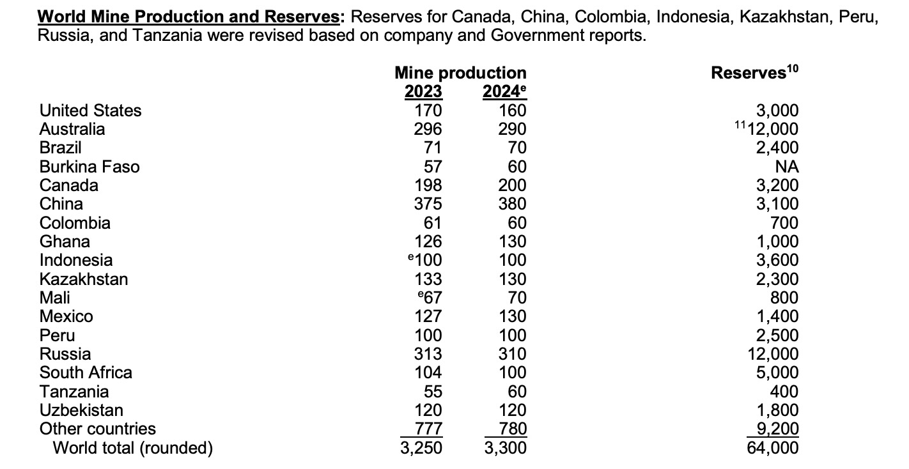

An overview of the code used to generate a redesign of the gold reserves infographic by Visual Capitalist.
Midterm Redesign code overview.
This page provides a brief overview of the code used to generate the Gold Reserves mid term project.
We first load libraries and packages that will be needed.
library(tidyverse)
── Attaching core tidyverse packages ──────────────────────── tidyverse 2.0.0 ──
✔ dplyr 1.1.4 ✔ readr 2.1.5
✔ forcats 1.0.0 ✔ stringr 1.5.2
✔ ggplot2 4.0.0 ✔ tibble 3.3.0
✔ lubridate 1.9.4 ✔ tidyr 1.3.1
✔ purrr 1.1.0
── Conflicts ────────────────────────────────────────── tidyverse_conflicts() ──
✖ dplyr::filter() masks stats::filter()
✖ dplyr::lag() masks stats::lag()
ℹ Use the conflicted package (<http://conflicted.r-lib.org/>) to force all conflicts to become errors
We created a csv file by copying the data found in the USGS January 2025 report on page 83. This was feed into Claude, an AI tool that has gained recent popularity which made it simple to generate a proper csv file. As you can see, the original chart includes commas as thousands separators and superscript markers in the Reserves column and elsewhere, which makes it difficult to import cleanly into a data frame with read_csv() in R.

Source data taken directly from the USGS Mineral Commodity Summaries 2025
After creating the clean data.csv referenced in the original source image, the csv file loads into a data frame with no issues.
# Begin by loading the data from the csv file. df <-read_csv("../data/data.csv")
Rows: 19 Columns: 4
── Column specification ────────────────────────────────────────────────────────
Delimiter: ","
chr (1): Country
dbl (3): Production_2023, Production_2024, Reserves
ℹ Use `spec()` to retrieve the full column specification for this data.
ℹ Specify the column types or set `show_col_types = FALSE` to quiet this message.
head(df)
# A tibble: 6 × 4
Country Production_2023 Production_2024 Reserves
<chr> <dbl> <dbl> <dbl>
1 United States 170 160 3000
2 Australia 296 290 12000
3 Brazil 71 70 2400
4 Burkina Faso 57 60 NA
5 Canada 198 200 3200
6 China 375 380 3100
Data preparation
The data set has at least one NA values that should be removed.
print(df)
# A tibble: 19 × 4
Country Production_2023 Production_2024 Reserves
<chr> <dbl> <dbl> <dbl>
1 United States 170 160 3000
2 Australia 296 290 12000
3 Brazil 71 70 2400
4 Burkina Faso 57 60 NA
5 Canada 198 200 3200
6 China 375 380 3100
7 Colombia 61 60 700
8 Ghana 126 130 1000
9 Indonesia 100 100 3600
10 Kazakhstan 133 130 2300
11 Mali 67 70 800
12 Mexico 127 130 1400
13 Peru 100 100 2500
14 Russia 313 310 12000
15 South Africa 104 100 5000
16 Tanzania 55 60 400
17 Uzbekistan 120 120 1800
18 Other countries 777 780 9200
19 World total (rounded) 3250 3300 64000